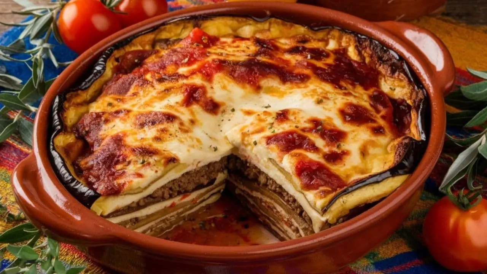
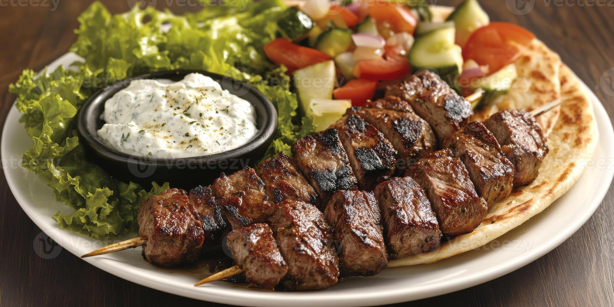
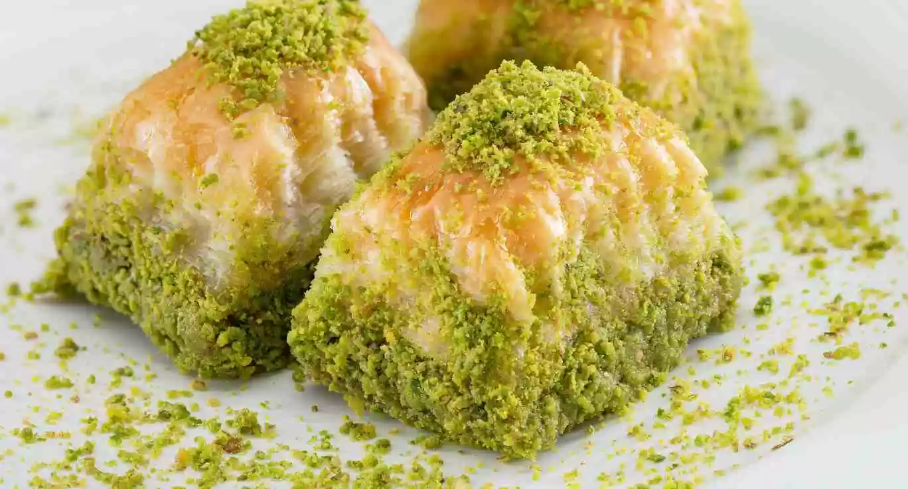
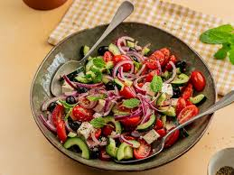

Moussaka

Prato assado em camadas feito com berinjela, carne moída e molho branco (bechamel). É um dos mais tradicionais do país.
Souvlaki

Espetinhos de carne grelhada servidos com pão pita, molho e acompanhamentos.
Baklava

Doce feito com massa folhada, nozes e mel, muito popular na culinária grega.
Horiatiki Salata

Tradicional salada grega preparada com tomate, pepino, cebola, azeitonas e queijo feta, representando os sabores típicos da culinária da Grécia.